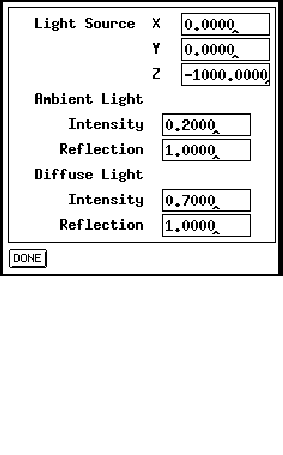

In the light panel, position and parameters of the light source can be set. The fields Position determine the location of the source. It is set to (0, 0, -1000) by default, which is the point of the viewer. This means that the net is illuminated exactly from the front. A point in positive z-range is not advisable, since all surfaces would then be shaded.
With the Ambient Light fields, the parameters for the background
light are set.
Intensity sets the intensity of the background brightness.Reflection is the reflection constant for the background reflection. (0 Ref.

1)The fields Diffuse Light determine the parameters for diffuse reflection.
Intensity sets the intensity of the light source.
Reflection is the reflection constant for diffuse reflection. (0
Ref.
1)